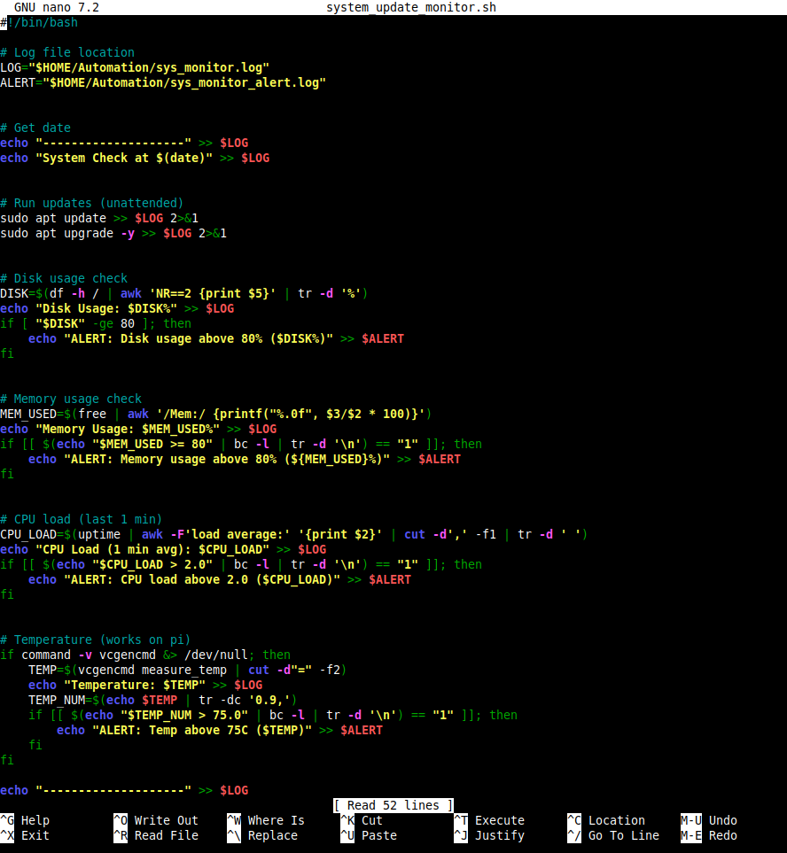
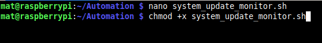
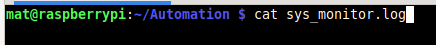
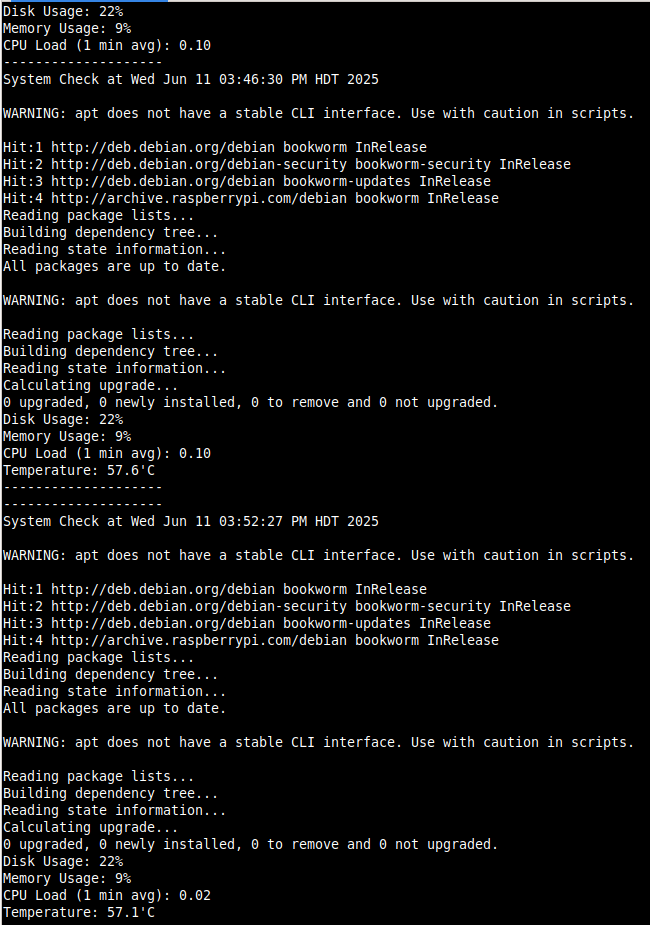
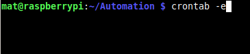

System Update and Device Health Monitor
A Bash script that checks for updates (and installs them if available) while logging disk, memory, CPU usage, and device temperature. Designed for Raspberry Pi 5 and scheduled via cron.
Flow: create the script → make it executable → run and review logs → schedule it hourly. The screenshots below walk through each step.
1) Script Creation


2) Run the Script

3) Review the Logs
Concatenate the latest log outputs to confirm update actions and resource/temperature readings.


4) Schedule Hourly with Cron


0 * * * * /path/to/update-monitor.sh